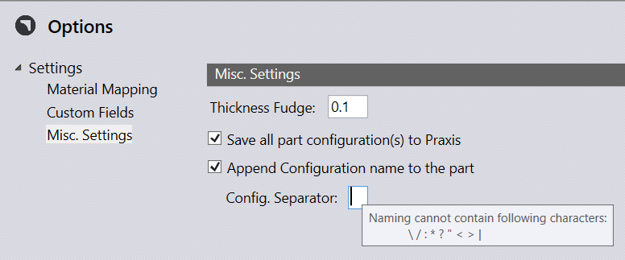
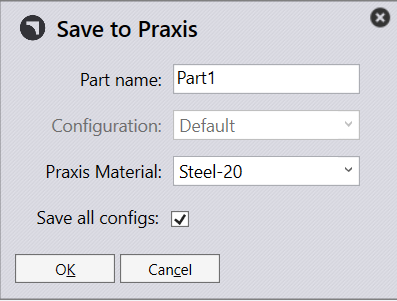
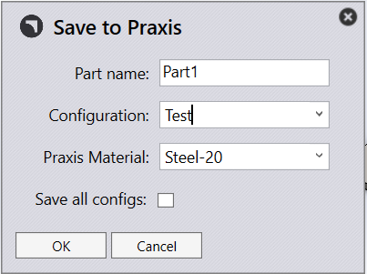

Save All part configuration to Praxis setting is available in settings . misc . settings page in SolidWorks Addin options dialog. Enable this to extract all configurations from a multi-configuration SolidWorks part. To keep the part name of the extracted geometry unique, the part name is appended with the configuration name. A configurable separator character is used to join the two.

This option can be overridden in the save dialog.
 